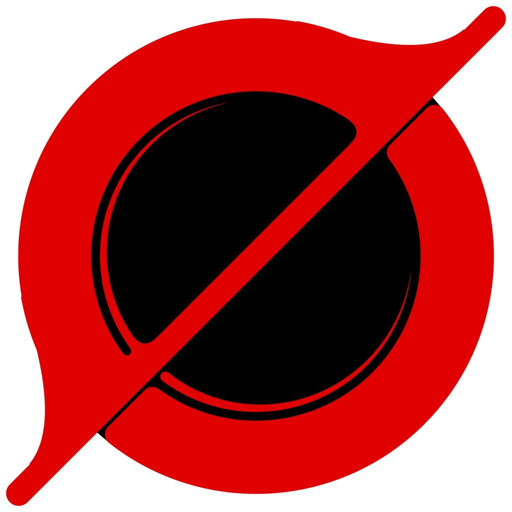

Black CycloneVPN bị rớt nên mọi kết nối Internet đang bị chặn để không lộ IP thật.
Chọn đường đi cho traffic. Cài đặt riêng của chế độ đang chọn hiện ở bên dưới. Bấm cạnh mỗi mục để xem giải thích chi tiết.
Cloudflare WARP — toàn bộ traffic đi qua mạng Cloudflare (miễn phí, mã hoá WireGuard). Website thấy IP Cloudflare thay vì IP của bạn. Một số trang chặn hoặc bắt captcha với IP WARP; tốc độ phụ thuộc giờ cao điểm.
Server riêng — dùng VPS hoặc dịch vụ VPN bạn có (link chia sẻ hoặc subscription). Vượt được mọi kiểu chặn, chọn được quốc gia; tốc độ và độ ổn định tuỳ server.
Đăng ký tạo một tài khoản WARP miễn phí, ẩn danh (không cần email). Khoá được lưu mã hoá trên máy này. Đăng ký lại tạo tài khoản mới (IP ảo mới) và bỏ tài khoản cũ.
Key WARP+: nếu bạn có key WARP+ (mua trong app 1.1.1.1 hoặc được chia sẻ), dán vào để dùng mạng ưu tiên, thường nhanh hơn bản miễn phí.
Mặc định
Endpoint là địa chỉ máy chủ Cloudflare (IP:port) mà máy bạn kết nối WireGuard tới. Nhà mạng đôi khi chặn hoặc bóp một số IP / port, khiến WARP không kết nối được hoặc rất chậm.
Quét endpoint thử khoảng 250 địa chỉ bằng handshake WireGuard thật (mất vài giây) và liệt kê những cái trả lời nhanh nhất; bấm vào một dòng để dùng nó. Cần ngắt kết nối trước khi quét.
Bấm vào một server để dùng nó. Tự động: cứ 3 phút đo độ trễ của mọi server và dùng server nhanh nhất. Đổi server khi đang kết nối có hiệu lực ngay, không cần ngắt.
Ping: khi chưa kết nối, đo thời gian mở kết nối TCP tới server (Hysteria2 / TUIC dùng UDP nên không đo được, hiện “—”). Khi đã kết nối, đo thời gian tải một trang thật qua từng server — chính xác hơn.
Đổi tên: bấm vào tên server. Xoá: bấm ✕ hai lần.
Dán một hoặc nhiều link chia sẻ (mỗi dòng một link) lấy từ nhà cung cấp hoặc từ panel VPS của bạn (3x-ui, Marzban, Hiddify…). Link trùng sẽ được bỏ qua.
Bật: khi đổi server (bằng tay hoặc do chế độ Tự động), các kết nối đang mở — tab đang tải, game, cuộc gọi — bị cắt và tự mở lại qua server mới, nên IP đổi ngay lập tức.
Tắt: kết nối cũ chạy tiếp trên server cũ cho tới khi tự đóng, chỉ kết nối mới dùng server mới. Không làm gián đoạn cuộc gọi hay file đang tải.
Thay đổi mục này cần kết nối lại.
Subscription là một đường link (https://…) mà nhà cung cấp VPN đưa cho bạn. Link này chứa danh sách server và được nhà cung cấp cập nhật khi họ thêm / đổi server.
Cập nhật tất cả tải lại mọi danh sách. Server bạn đang chọn được giữ nguyên nếu vẫn còn trong danh sách mới. Xoá một subscription sẽ xoá luôn các server của nó.
Quản lý server riêng trên VPS của bạn: cài đặt, thêm / xoá người dùng, lấy link. App điều khiển VPS qua SSH, không mở thêm cổng nào trên VPS.
Quản lý và người dùng khác nhau ở chỗ nào? Ai đăng nhập SSH được vào VPS (root hoặc user có sudo) thì là người quản lý. Người dùng chỉ có link vless://: link đó chỉ kết nối được VPN, không mở được SSH, nên không thể thêm / xoá ai hay xem log.
Thông tin đăng nhập SSH được mã hoá và chỉ lưu trên máy này. Đừng đưa mật khẩu SSH cho người dùng: gửi họ link của riêng họ là đủ.
Lần đầu kết nối, app ghi nhớ khoá SSH của VPS (fingerprint). Nếu về sau khoá đổi, app sẽ từ chối kết nối để chống giả mạo.
Nhập thông tin nhà cung cấp VPS gửi cho bạn. App sẽ thử đăng nhập trước khi lưu.
Quyết định traffic nào đi qua VPN và traffic nào đi thẳng ra mạng nhà mạng. Đi thẳng thì nhanh hơn và không tốn băng thông server, nhưng nhà mạng thấy được bạn truy cập đâu và có thể chặn.
Truy cập tới website Việt Nam đi thẳng, không vòng qua server nước ngoài: nhanh hơn, web ngân hàng / dịch vụ công không báo “truy cập từ nước ngoài”, và tiết kiệm băng thông server.
Nhận biết bằng tên miền đuôi .vn và danh sách dải IP của Việt Nam. Trang Việt Nam dùng tên miền quốc tế (vd. zalo.me) vẫn được nhận ra nếu máy chủ đặt ở Việt Nam.
Các tên miền này và mọi tên miền con của chúng đi thẳng, không qua VPN. Ví dụ zalo.me áp dụng cho cả chat.zalo.me. Có thể dán cả URL, app tự lấy phần tên miền.
Các tên miền này luôn đi qua VPN, kể cả khi chúng có đuôi .vn, có IP Việt Nam, hay nằm trong danh sách đi thẳng. Dùng cho trang bị nhà mạng chặn nhưng lại có máy chủ ở Việt Nam.
Mọi traffic của các chương trình này đi thẳng, bất kể tên miền. Hợp với game online (ping thấp hơn), Steam hay torrent (không tốn băng thông server).
Nhập tên file, mỗi dòng một tên, ví dụ steam.exe. Xem tên file trong Task Manager → tab Details.
Nhập tên tiến trình, mỗi dòng một tên, ví dụ steam. Xem tên bằng System Monitor hoặc lệnh ps -e.
DNS là bước đổi tên trang (vd. facebook.com) thành địa chỉ IP. Nhà mạng chặn web chủ yếu bằng cách trả sai ở bước này. App gửi mọi truy vấn DNS dưới dạng mã hoá qua HTTPS (DoH) tới server dưới đây, nên nhà mạng không đọc hay sửa được. Mục này luôn bật ở mọi chế độ.
Gợi ý: https://1.1.1.1/dns-query (Cloudflare), https://8.8.8.8/dns-query (Google), https://9.9.9.9/dns-query (Quad9). Nên dùng địa chỉ IP thay vì tên miền để tránh bị chặn ngay từ bước tìm server DNS.
Kết nối tới thiết bị trong mạng nội bộ (địa chỉ 192.168.x.x, 10.x.x.x, 172.16–31.x.x) như máy in, NAS, router, chia sẻ file, Chromecast đi thẳng, không vào VPN.
Tắt mục này thì các thiết bị đó có thể không truy cập được khi bật VPN. Khi kill switch đang chặn, mạng LAN vẫn dùng được nếu mục này bật.
Cách ứng dụng phản ứng khi rớt mạng, khi bạn đóng cửa sổ và khi khởi động máy. Các mục ở đây có hiệu lực ngay, không cần kết nối lại.
Bình thường khi VPN dừng bất ngờ, máy tự quay về mạng thường và mọi trang bạn đang mở sẽ thấy IP thật. Với kill switch, app giữ card mạng ảo và chặn mọi kết nối Internet thay vào đó.
Mạng bị chặn cho đến khi kết nối lại thành công hoặc bạn bấm Ngắt kết nối. Mạng LAN vẫn dùng được nếu bật mục LAN ở tab Định tuyến.
Khi lõi VPN dừng bất ngờ (server sập, mạng chập chờn, máy thức dậy sau khi ngủ), app tự khởi động lại tối đa 5 lần, cách nhau 2, 5, 10, 20 và 30 giây.
Nếu vẫn không được: có kill switch thì mạng tiếp tục bị chặn chờ bạn xử lý; không có kill switch thì app ngắt kết nối và báo lỗi.
Hiện thông báo ở góc màn hình khi: VPN bị rớt, kill switch bắt đầu chặn mạng, đã tự kết nối lại được, hoặc không tự kết nối được lúc mở app. Hữu ích khi app đang ẩn dưới khay.
Mở app là kết nối ngay, không cần bấm nút. Kết hợp với “Khởi động cùng Windowsmáy” để máy luôn có VPN từ lúc đăng nhập. Nếu kết nối thất bại, app báo lỗi (và hiện thông báo nếu bật).
App tạo một tác vụ “Black Cyclone” trong Task Scheduler để chạy khi bạn đăng nhập, với quyền Administrator mà không hiện hộp thoại UAC. App mở khoảng 10 giây sau khi đăng nhập để Windows kịp khởi động xong.
Tắt mục này sẽ xoá tác vụ. Gỡ cài đặt app cũng tự xoá tác vụ.
App tạo file ~/.config/autostart/blackcyclone.desktop để môi trường desktop (GNOME, KDE, XFCE…) chạy app khi bạn đăng nhập, khoảng 10 giây sau để thanh tác vụ kịp hiện. Không cần nhập mật khẩu vì quyền mạng đã được cấp sẵn cho file app.
Tắt mục này sẽ xoá file đó.
Khi app tự chạy cùng Windows, nó chỉ hiện icon ở khay hệ thống (góc phải thanh taskbar, có thể nằm trong mũi tên ^) mà không mở cửa sổ. Bấm vào icon để mở. Không ảnh hưởng khi bạn tự mở app.
Khi app tự chạy lúc đăng nhập, nó chỉ hiện icon ở khay hệ thống mà không mở cửa sổ. Bấm vào icon để mở. Không ảnh hưởng khi bạn tự mở app. Trên GNOME cần cài extension “AppIndicator and KStatusNotifierItem Support” thì mới thấy icon khay; nếu không có khay, đừng bật mục này.
Bật: nút X chỉ ẩn cửa sổ, VPN vẫn chạy; mở lại bằng icon ở khay. Muốn tắt hẳn thì dùng nút Thoát hẳn bên dưới hoặc chuột phải icon → Thoát.
Tắt: nút X ngắt VPN và thoát app.
Kiểm tra VPN có hoạt động đúng không, và xem nhật ký khi gặp lỗi.
Hiện IP công khai mà website nhìn thấy, quốc gia, trung tâm dữ liệu Cloudflare trả lời và trạng thái WARP. Bật VPN mà IP / quốc gia đổi nghĩa là VPN đang hoạt động.
Sau đó thử mở các trang hay bị chặn hoặc bóp ở Việt Nam. ✗ kèm “bị ngắt kết nối”, “chứng chỉ sai” hoặc “không phân giải được tên miền” thường là bị nhà mạng chặn. Chạy thử cả khi tắt và bật VPN để so sánh.
Hoạt động của app và sing-box. Khi báo lỗi, gửi kèm file app.log trong thư mục dữ liệu.